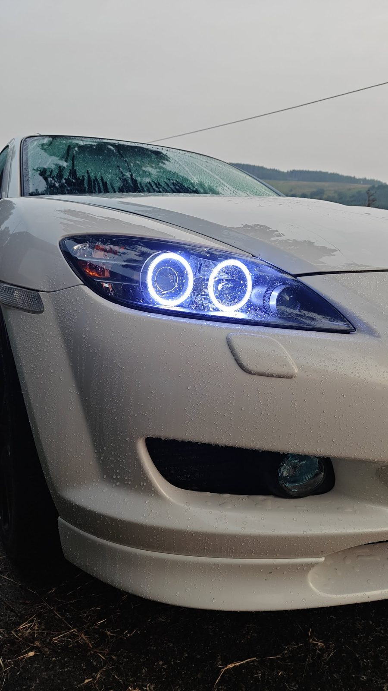

The short version: I bought a set of "plug and play" sequential tail lights off a marketplace listing, they leaked within a month, and the sequencer died a month after that. Pulling them apart to see what went wrong taught me more about how these things actually work than any install guide did — and that a lot of the stuff sold as bolt-on is built to look good in photos, not to survive a winter.
Retrofit Illumination started from fixing that problem for myself, then for a few people who saw the car and asked who did it. Now it's a proper shop process: full teardown, factory-grade resealing, and a bench test cycle before anything goes back on a car. Nothing leaves here without being checked for water intrusion and thermal cycling first, because that's the thing that actually kills these builds — not the LEDs, the seal around them.
I still do every teardown myself. Nothing gets outsourced to a "fulfillment partner" or dropshipped with our name slapped on the box. If a housing comes apart wrong, or a strip doesn't sit the way it should against the lens, that build stops until it's right — even if it means missing a delivery date I quoted. I'd rather tell you it's running late than send something back out that's going to fog up in six months.
We don't do star ceiling / fiber-optic roof headliners — it's a completely different install (trimming out an entire headliner) and not something we've built the process for yet. Everything else on the Work and Shop pages, that's the actual business.
Full retrofits (headlight or taillight teardown-and-rebuild) currently run 3–4 weeks from drop-off, mostly because of cure and bench-test time — that part doesn't get rushed. Straightforward installs like underglow or interior ambient kits are usually same-day if you're local. Send details through the quote form and I'll reply with a realistic timeline, not an optimistic one.